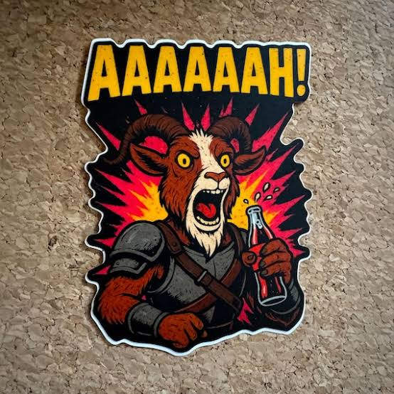
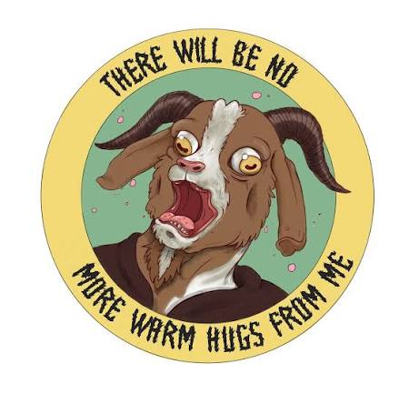

About Quest Log
I'm Jeremy. By day I'm a medical courier for Labcorp — running specimens between draw sites, clinics, and the lab on a set route, in and out of the SUV all day — basically my own personal wage cage, just with better legroom. It's not glamorous, but it means hours of windshield time, and that's when almost all of my "reading" actually happens. Add in chores around the house and this turns into a lot of listening hours a week.
The job's actually perfect for it. Steady routes, predictable stops, and long highway stretches between them — plenty of room to get lost in a book without losing track of where I'm supposed to be. Some days it's the only thing that makes the drive worth it.
Outside of work and audiobooks, I'm a huge dog person — that's me and my dog Takeo out on a hike. He doesn't give a shit about any of these books, but he's still the best part of most days.
This blog is just me keeping track of what I'm listening to. It started out mostly LitRPG and progression fantasy, and there's still plenty of that, but these days it's whatever grabs me — epic fantasy, sci-fi, thrillers, horror, doesn't matter. If it's good enough to survive a commute, it's good enough to write about. Honestly, audiobooks are what keep me sane through all of it.


Got a book I should check out?
Fantasy, sci-fi, thrillers, LitRPG, horror — any genre, I'm always looking for the next thing to listen to on the road. Send me your recommendation.
selloutcubicle@gmail.comCheck the now page for a running log of whatever I'm mid-book on, or the entries page for the full writeups.